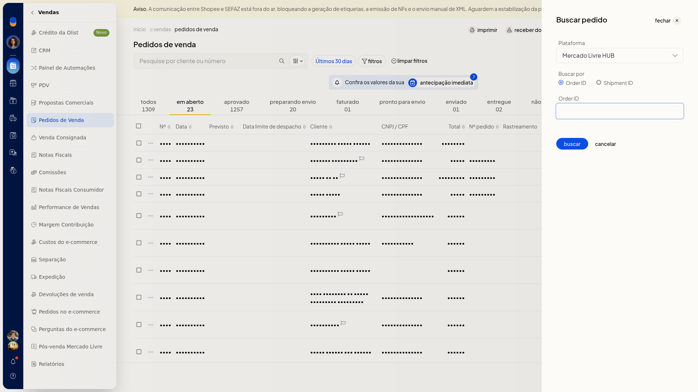

Receber pedidos de venda do e-commerce
No ERP da Olist, você traz para Pedidos de Venda os pedidos que já estão no ecommerce. Na tela Pedidos no e-commerce, você busca o pedido pela plataforma e inicia o recebimento.
Pré-requisitos
- Se Receber do e-commerce não aparecer, peça acesso ao administrador da conta. O recebimento também depende da importação de pedidos estar liberada para a empresa.
Instruções
-
Acesse Vendas > Pedidos de Venda.
-
Clique em Receber do e-commerce. Você também pode abrir Mais ações e clicar em Receber pedidos do e-commerce.
-
Na tela Pedidos no e-commerce, busque o pedido. A busca inclui a plataforma.

-
Em Ações, clique em Iniciar recebimento.
Informações adicionais
- A validação de estoque que não pode ser atendido não é feita para pedidos incluídos pelo ecommerce.